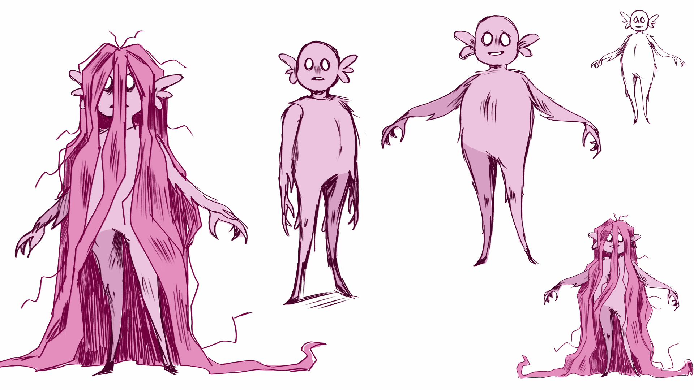
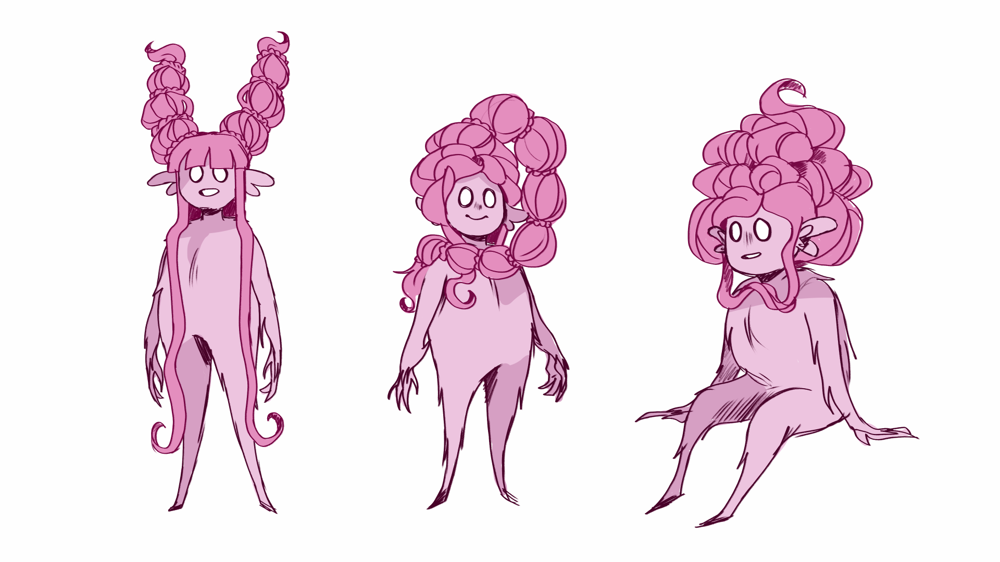
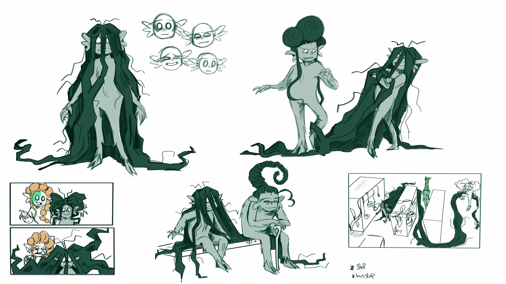

Snip is a concept for an animated short I developed during my Masters of animation. The story focuses on a society of creatures where the care of their long luscious hair is admired and expected. Our main character, however, has never been able to keep their hair under control, hates it, and struggles to keep up. The story explores themes of (queer) identity and community, and letting go of expectations.
  